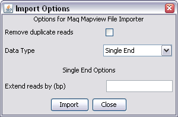

There are several different output formats which can be produced by different parts of Maq. For import into SeqMonk you need to use mapview to generate tab delimited text files containing the mapped positions of each read.
Because the mapview format is well defined you don't need to specify much information to import your data.

There are no Maq specific options so you will just see the common options for both single and paired end data.